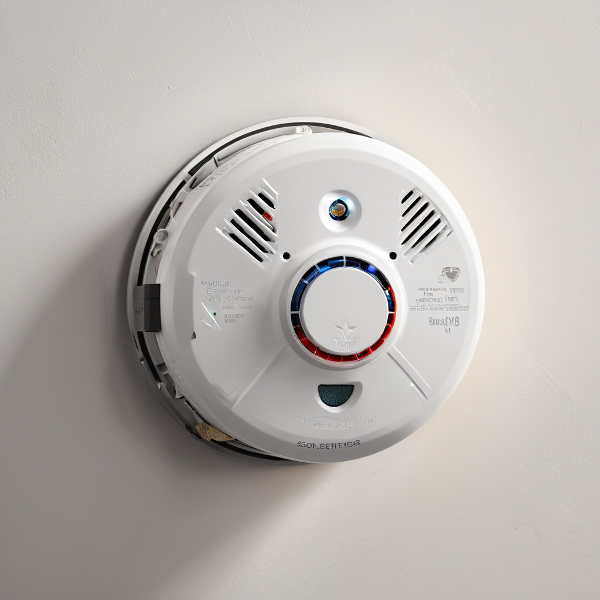
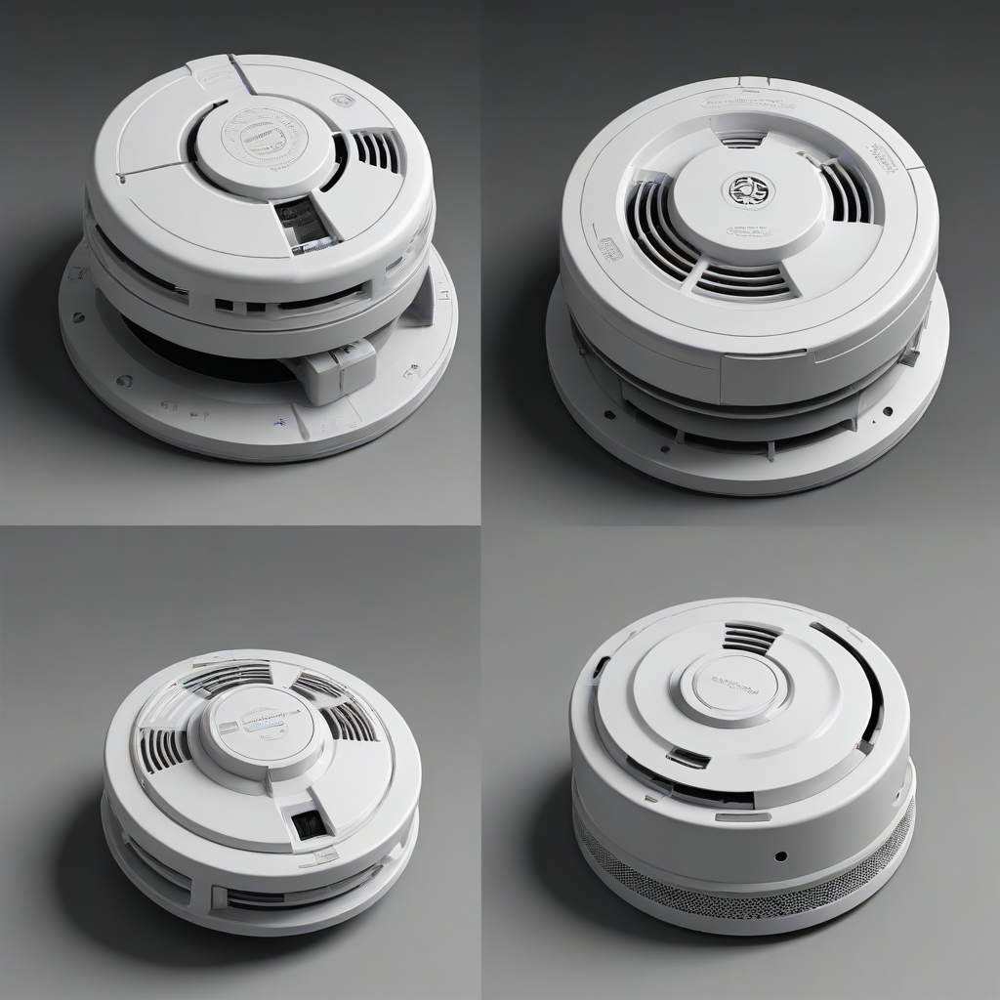

Fire safety is not merely a regulatory checkbox; it is the cornerstone of protecting your family and property. In the United States, residential fires claim lives and destroy homes when warning systems fail or are absent. As we move through 2026, the technology surrounding home safety has evolved significantly. We are no longer limited to basic beeping devices on the ceiling. Modern solutions integrate with smart home ecosystems, provide voice guidance during emergencies, and offer remote monitoring via mobile apps. However, the core function remains critical: detecting smoke or carbon monoxide early enough to allow for safe evacuation.
Choosing the right protection requires navigating a landscape filled with technical jargon, varying power requirements, and evolving safety standards. Whether you are a homeowner managing a new construction or a renter looking for a non-invasive solution, understanding the mechanics of detection is vital. This guide breaks down the essential differences between sensor types, power sources, and connectivity options to help you make an informed decision. We prioritize safety above all else, ensuring that budget-conscious consumers do not have to compromise on critical life-saving features.
Understanding Smoke Alarm Types

When searching for the best smoke detectors 2026, the first critical distinction is the sensor technology. Not all fires produce the same type of smoke, and different sensors react differently to those byproducts. Understanding these smoke alarm types is essential for ensuring comprehensive coverage in your living space.
Ionization vs. Photoelectric Sensors
Ionization detectors use a small amount of radioactive material to create a current between two electrically charged plates. Smoke particles disrupt this current, triggering the alarm. These units are exceptionally fast at detecting flaming fires, such as those caused by grease or paper. However, they are more prone to false alarms from cooking smoke and are slower to detect smoldering fires.
- Best for: Living rooms, kitchens, and areas with high-speed fire risks.
- Limitation: Can miss smoldering fires until the flames have grown significantly.
Photoelectric detectors use a beam of light inside a sensing chamber. When smoke particles enter the chamber, they scatter the light, which hits a sensor and triggers the alarm. These are superior at detecting smoldering fires, such as those caused by overheating electronics or smoking in bed. Statistics show that most home fires are smoldering in nature, making this a vital technology.
- Best for: Bedrooms, hallways, and basements.
- Limitation: May be slightly slower to detect rapid, flaming fires compared to ionization.
The Case for Dual-Sensor Technology
The National Fire Protection Association (NFPA) and most fire safety experts now recommend dual-sensor alarms. These units combine both ionization and photoelectric technologies in a single housing. By using both methods, you eliminate the blind spots inherent in single-sensor models. While dual-sensor units often come at a slightly higher price point, the added safety margin is
Power Sources: Hardwired vs. Battery
Once you have selected the sensor type, you must decide on the power source. This decision often depends on whether you are installing in a new build, an existing home, or a rental property. The debate between hardwired vs battery smoke alarms involves trade-offs between reliability, installation complexity, and maintenance.
Hardwired Systems with Battery Backup
Hardwired alarms are connected directly to your home's electrical system. They are typically required by local building codes for new construction and major renovations. The primary advantage is continuous power; the alarm will never die due to a depleted battery, provided the home has electricity. Most hardwired units still include a battery backup, ensuring they function during power outages, which often coincide with fire incidents.
- Pros: Reliability, seamless interconnection, no battery replacement anxiety.
- Cons: Requires professional installation or significant DIY electrical knowledge, harder to relocate.
If you are looking to upgrade an existing hardwired system, ensure the new unit is compatible with your home's voltage and interconnection wiring. Mixing brands can sometimes lead to interconnectivity failures.
Battery and Plug-In Powered Alarms
Battery-powered alarms offer the ultimate in flexibility. They are ideal for renters who cannot drill into walls or run new wiring. Modern technology has extended battery life significantly, with many units offering 10-year sealed lithium batteries that last the lifetime of the device. Plug-in models also exist, offering a middle ground by using AC power with a battery backup, avoiding hardwiring entirely.
- Pros: Easy installation, portable, no wiring required.
- Cons: Battery maintenance is required (unless 10-year sealed), potential for power loss if battery is removed.
For many homeowners, a hybrid approach works best. Hardwired units in the main living areas and battery-powered units in guest rooms or hard-to-wire spaces ensure complete coverage without extensive renovation.
Top Picks for Best Smoke Detectors 2026
Selecting the right device can be overwhelming given the market variety. We have tested and analyzed the leading options available this year to bring you a curated list. These selections balance cost, features, and safety certifications. Below is a comparison of the top performers.
| Model | Technology | Connectivity | Approx. Price | Best For |
|---|---|---|---|---|
| Nest Protect (2nd Gen) | Dual Sensor | Wi-Fi, Smart Home | $119.00 | Smart Home Integration |
| First Alert Onelink Safe & Sound | Photoelectric | Wi-Fi, App | $49.00 | Budget Smart Option |
| Kidde Nighthawk | Dual Sensor | None (Basic) | $24.00 | Standard Coverage |
| Ring Alarm Smoke + CO | Dual Sensor | Wi-Fi, Ring App | $89.00 | Ring Ecosystem Users |
| Brinks Home Smart Smoke | Photoelectric | Wi-Fi, App | $59.00 | Professional Monitoring |
Detailed Product Analysis
Nest Protect: This device remains the gold standard for smart safety. It features a bright ring interface that changes color to indicate status (green for good, red for fire). It speaks to you, telling you exactly where the smoke is located, which reduces panic. It integrates deeply with Google Assistant and Apple HomeKit. However, the price is high, and the subscription for advanced battery monitoring features is optional but recommended.
First Alert Onelink: For those on a budget who still want smart features, this is an excellent choice. It connects to your phone and can send alerts if the alarm is triggered. It is a photoelectric sensor, making it great for bedrooms. It lacks the voice alerts of the Nest but covers the essential bases for remote monitoring.
Kidde Nighthawk: Sometimes, you just want a reliable alarm without the app. The Nighthawk is a dual-sensor unit that is hardwired or battery-ready. It uses a unique hush button technology to silence false alarms without needing to wave a broom over it. It is a workhorse for basic compliance and safety.
For more information on integrating these devices into a broader security setup, check out our guide on Smart Home Security Systems.
Interconnected Systems and Whole-Home Coverage
One of the most overlooked aspects of home safety is the isolation of alarms. If a fire starts in the kitchen and you are sleeping in a bedroom on the second floor, a single alarm in the kitchen may not be heard. This is where interconnected smoke detectors become vital. When one alarm detects smoke, it triggers every other alarm in the house simultaneously.
How Interconnection Works
In a hardwired system, this is done via a physical wire connecting the units. In modern wireless systems, they communicate via radio frequency (RF) or Wi-Fi. The goal is to ensure that no matter where you are in the home, you hear the alarm. The NFPA recommends that all smoke alarms be interconnected to maximize warning time.
When shopping, look for the word "interconnect" or "wireless interconnect" on the packaging. Some smart detectors automatically interconnect via the app, while others require a specific hub or base station to facilitate the communication between units.
Placement Strategy
Interconnection is only effective if the alarms are placed correctly. Follow these guidelines for optimal coverage:
- Every Level: Install at least one alarm on every level of the home, including the basement.
- Bedrooms: Place an alarm inside each bedroom and outside sleeping areas.
- Dead Zones: Avoid placing alarms within 10 feet of cooking appliances to reduce false alarms, but ensure the kitchen is covered by a nearby unit.
- Dead Air: Do not place alarms in "dead air" spaces like corners where smoke may not circulate easily.
By creating a network of alarms, you eliminate the risk of a fire starting in a blind spot. This interconnected approach is a critical component of modern fire safety planning.
Installation and Maintenance Guidelines
Purchasing the equipment is only half the battle. Proper installation and regular maintenance are required to ensure the device functions when needed. Adhering to NFPA smoke alarm standards ensures your setup meets professional safety benchmarks.
Installation Best Practices
For hardwired units, turn off the power at the circuit breaker before beginning any work. If you are uncomfortable working with electricity, hire a licensed electrician. For battery units, ensure you mount them securely using the provided anchors. Mounting on a ceiling should be done in the center of the room or hallway, at least 4 inches away from walls. If mounting on a wall, place it high, within 12 inches of the ceiling.
Testing the interconnection is crucial after installation. Trigger one alarm manually using the test button and verify that all other units in the system sound. If one fails, check the wiring or battery status immediately.
Maintenance Schedule
Neglect is the enemy of safety. Dust and debris can clog sensors, rendering them ineffective. Follow this maintenance schedule:
- Monthly: Test every alarm using the test button. This ensures the battery, circuit, and horn are functional.
- Quarterly: Vacuum the exterior vents to remove dust and cobwebs.
- Annually: Inspect battery connections and replace batteries if they are not sealed 10-year units.
- Every 10 Years: Replace the entire unit. Sensors degrade over time, and electronic components fail. Check the manufacturing date on the back of the alarm.
Many modern smart detectors will notify you via app when maintenance is due, but manual checks should never be skipped. We recommend keeping a log of testing dates, especially for large households or rental properties.
Frequently Asked Questions
Homeowners often have specific concerns regarding reliability, compatibility, and legal requirements. Here are the answers to the most common questions we receive at Alarm Beep Guide.
Can I mix different brands of smoke detectors?
Generally, no. While individual units may work independently, interconnection usually requires all units to be from the same manufacturer. Hardwired units often have proprietary wiring protocols that do not translate between brands. If you are upgrading, it is safest to replace the entire system with a single brand to ensure full interconnectivity.
How long do batteries last in smoke alarms?
Standard alkaline batteries typically last 6 months to a year, depending on usage and temperature. However, many modern alarms come with sealed 10-year lithium batteries that last the life of the unit. If your alarm chirps, replace the battery immediately. Do not ignore the chirp; it indicates a low power state that could leave you unprotected.
Are smart smoke detectors worth the extra cost?
For most users, yes. The extra cost provides peace of mind through remote notifications. If you travel frequently or have a large home, knowing that your phone will alert you to a fire when you are not home is a significant benefit. Additionally, features like voice alerts and battery status monitoring reduce maintenance anxiety.
Do I need a smoke detector in the kitchen?
Yes, but placement is key. Cooking fires are a leading cause of home fires. However, placing a sensitive alarm directly over a stove can lead to constant false alarms due to burnt toast or grease. Install the alarm at least 10 feet away from cooking appliances. Consider using a photoelectric-only unit in the kitchen to reduce sensitivity to fast-burning cooking smoke.
What is the difference between a smoke detector and a carbon monoxide alarm?
Smoke detectors look for particulate matter in the air from combustion fires. Carbon monoxide (CO) alarms detect the colorless, odorless gas produced by faulty heating systems or gas leaks. They are distinct devices. Many modern units combine both functions (Smoke + CO), which is highly recommended to save space and ensure both hazards are covered.
Do smoke detectors expire?
Yes. Sensors degrade over time due to environmental factors like dust, humidity, and temperature fluctuations. The standard lifespan is 10 years from the date of manufacture. After this point, the reliability cannot be guaranteed, and the unit should be replaced entirely. Check the back of your alarm for the manufacture date.
Conclusion
Protecting your home from fire requires a proactive approach that combines the right technology with diligent maintenance. As we navigate the best smoke detectors 2026 market, remember that the "best" unit is the one that is installed correctly, tested regularly, and replaced when its lifespan ends. Whether you choose a high-end smart detector or a reliable battery-powered model, ensure it features dual-sensor technology and is part of an interconnected system.
Take action today to audit your current safety setup. Check the manufacture dates on your existing alarms, test them immediately, and plan for upgrades if they are nearing the 10-year mark. Your family's safety is the most important investment you can make. By following the guidelines outlined in this article, you are taking a significant step toward securing your home against one of the most unpredictable disasters. Stay informed, stay prepared, and stay safe.